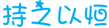
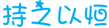
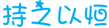
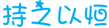

往期作品


 



加载中......
思考所经过的时间，叫做暗时间。——《慢慢品-暗时间》
我们是生活在信息时代的远古人。——《慢慢品-暗时间》
不可替代性 = 专业水平 + 跨领域技能 + 学习能力 + 性格 + …… ——《慢慢品-暗时间》
完美 = 完整 = 孤独 = 独立 = 有趣、自信 = 有自控力——《慢慢品-孤独六讲》
暗恋是学习和自己谈恋爱。——《慢慢品-孤独六讲》
每个人都在说，却没有人在听。——《慢慢品-孤独六讲》
结论让思维失去意义。——《慢慢品-孤独六讲》
如何解决伦理问题： 先个体，后伦理。——《慢慢品-孤独六讲》
烦恼永远都会存在， 它们一个接一个，一个比一个强。——《聊一聊烦恼》
事事顺心是运气，心顺事事是智慧。——《聊一聊情商》
尊重对方的外在，尊重对方的选择， 把对方“当人看”。——《聊一聊情商》
小技巧：会夸人，会示弱。——《聊一聊情商》
问题是不符合预期的事件。——《慢慢品-你的灯亮着吗？》
一款产品的生命周期： 产品、设计、前端、后台、测试、运营。——《分分钟入门-前端》
控制变量法： 非常棒的定位/分析问题的方法。——《睡眠质量》
个体差异： 了解自己身体的方方面面。——《睡眠质量》
睡眠包括： 快速动眼期、浅睡眠、深睡眠。——《睡眠质量》
我们 ---控制作息---> 生物钟 ---控制---> 身体——《睡眠质量》
环境 -> 人与事 -> 经历 -> 价值观——《慢慢品-小王子》
知世故而不世故，处江湖而远江湖。——《慢慢品-小王子》
如何坚持做一件事： 自驱力 + 工作量证明——《如何坚持做一件事》
自驱力：自我驱动的力量。——《如何坚持做一件事》
工作量证明给予我们成就感与认同感。——《如何坚持做一件事》
自我强化是改变最为困难的原因之一。——《如何坚持做一件事》
有不同的声音不一定是坏事， 但只有一种声音一定不是好事。——《如何坚持做一件事》
记忆增量理论： 随着年龄的增长， 相同时间所产生的新的经历越来越少， 使我们觉得时间越过越快。 ——《如何拥有更多时间》
如何主观地放慢时间： 产生新的经历。 ——《如何拥有更多时间》
如何产生新的经历： 完成陌生的复杂的事情， 完成简单事情时有产出。 ——《如何拥有更多时间》
计算机王国的构成： 0和1，与或非 ——《终极算法》
工业革命，让手工自动化， 信息革命，让脑力自动化， 机器学习，让自动化自动化。 ——《终极算法》
如果视频中有错误的地方，欢迎在评论区指出，谢谢 代码+笔记+制作计划：https://github.com/Ouyangqingxing/up